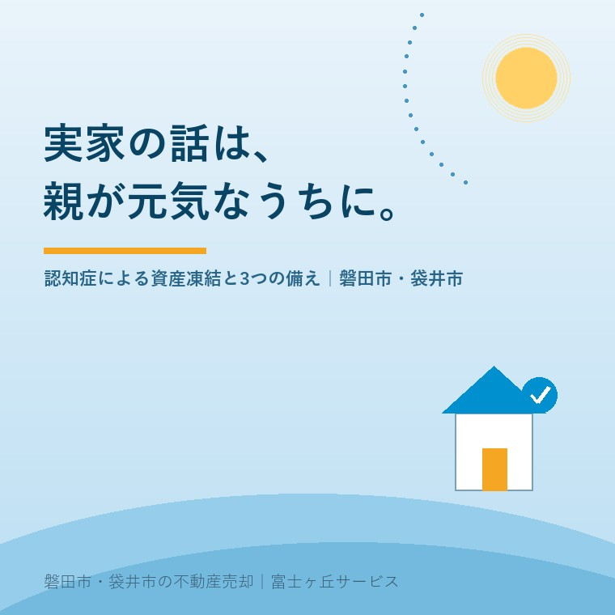

2026年7月21日｜カテゴリ：認知症・施設入居・実家じまい

この記事の要点
Q. 親が認知症になったら、実家はもう売れない？
A. 判断能力が大きく低下すると、たとえ子どもでも親名義の実家を売ることはできず、家庭裁判所が関わる成年後見制度を使う道しか残りません。親が元気なうちに備えれば、選択肢は大きく広がります。磐田市・袋井市では、介護施設の運営から不動産事業を始めた富士ヶ丘サービスのような「介護×不動産」専門の会社に相談するという選択肢があります。
「母が施設に入ることになったので、実家の売却を考えたい。ただ、母は認知症が進んでいて……」。介護と不動産の両方をやっている当社には、この順番でご相談が届くことが少なくありません。そして、とても心苦しいのですが、認知症が進んでからでは打てる手が限られてしまうのが現実です。今日は「なぜ売れなくなるのか」と「元気なうちに何ができるか」を、今年成立したばかりの制度改正の話も含めて整理します。
不動産の売買契約は、所有者本人が内容を理解して判断できること（意思能力）が大前提です。民法には、意思能力を欠いた状態で行った法律行為は無効と明記されています。認知症が進んで契約の意味が分からない状態になると、本人はもちろん、子どもが実印と権利証を預かっていても、親名義の実家を売ることはできません。預金口座も、金融機関が本人の意思確認をできなければ引き出しが制限されます。
これがいわゆる「資産凍結」です。切実なのは、介護施設の入居一時金や月々の費用に充てるつもりだった実家が、いちばんお金の必要なタイミングで動かせなくなることです。厚生労働省の研究班の推計では、認知症の高齢者は2025年時点で約472万人、高齢化がピークに向かう2040年には約584万人、高齢者のおよそ7人に1人になると見込まれています。どの家にも起こりうる話なのです。
判断能力が失われた後に実家を売るには、家庭裁判所に申し立てて成年後見人を選んでもらう方法が基本になります。ただし、次の点は知っておいてください。
この「一度始めたらやめられない」という使いにくさは、長年指摘されてきました。ここに大きな動きがあったのが今年です。2026年6月17日、成年後見制度を抜本的に見直す民法などの改正法が国会で成立し、6月24日に公布されました。2000年の制度開始以来の大改正で、後見・保佐・補助の3類型を「補助」に一本化し、実家の売却など目的を果たしたら終了できる、期間を区切った利用へと変わります。ただし、施行は公布から2年6か月以内とされており、実際に使えるのは2028年ごろの見込みです。そして、制度が使いやすくなっても、「本人の判断能力が失われたら家庭裁判所を通さないと実家を動かせない」という原則は変わりません。
だからこそ、備えは親が元気なうちに。代表的な3つを比べてみます。
| 備え | できること | ポイント |
|---|---|---|
| ①家族会議＋実家の現状整理 | 売る・貸す・住み続けるの方針と、名義・境界・農地などの支障を先に把握 | 費用も法律行為も不要で、今日から始められる。すべての備えの土台 |
| ②任意後見契約 | 将来判断能力が低下したときに、自分で選んだ人に任せる契約を公正証書で結んでおく | 後見人を自分で選べるのが法定後見との大きな違い。発効後は家庭裁判所の監督下に |
| ③家族信託（民事信託） | 実家や預金の管理・処分を子など信頼できる家族に託す契約。認知症が進んだ後も、受託者の判断で売却し介護費用に充てられる | 契約時に本人の判断能力が必要。設計は司法書士・弁護士など専門家と |
②と③は司法書士や弁護士の領域ですが、その前に①がなければ設計のしようがありません。実家の名義はだれか、土地は何筆あるか、田畑や未登記の建物が混ざっていないか──。この現状整理は、当社の「ふじがおか実家カルテ」がそのまま使えます。施設入居後の実家が「いつか戻る」で止まってしまう話も、備えが早いほど防ぎやすくなります。
当社は磐田市で介護施設を運営する中で、不動産の相談を受けるようになった会社です。現場で実感するのは、実家の話が動き出すきっかけの多くが「親の施設入居」だということです。入居の検討と費用の算段と実家の扱いが、同じ数か月の間に一度に押し寄せます。そのとき親御さんの判断能力が保たれているかどうかで、選べる道は大きく変わります。
磐田市・袋井市では、介護や認知症の心配ごとはお住まいの地区の地域包括支援センターが公的な相談窓口になります。あわせて、実家をどうするかという不動産側の整理は、介護のご事情ごと話せる相手だと進めやすいはずです。当社では親が施設に入居した後のご実家の相談を専用ページでご案内しています。
実家の話を切り出すのは気が引けるものですが、「まだ早いかな」と思えるうちが、実はいちばんいいタイミングです。富士ヶ丘サービスは、介護と不動産を一体でご相談いただける磐田・袋井の地域密着の会社として、「高く売る」だけでなく「家族があとで困らない備え」を大切にしています。まずは実家の現状を1冊にまとめることから始めませんか。
ふじがおか実家カルテ｜固定資産税通知書だけでも相談可
親が元気なうちに、実家の現状を1冊に。
名義・道路・境界・農地・残置物を宅建士が机上で確認し、家族会議のたたき台になるカルテをお作りします。実家じまい相談室もあわせてご利用ください。
本記事は2026年7月21日時点の情報をもとに作成しています。成年後見・任意後見・家族信託の利用や契約の個別判断は、司法書士・弁護士・家庭裁判所・お住まいの地域包括支援センターなどへご確認ください。
磐田市・袋井市の実家じまい・相続空き家相談
固定資産税通知書だけでも相談できます
住所があいまいでも、通知書や写真から名義・道路・農地・残置物の確認順を整理します。カルテ申込またはLINEで状況を送ってください。
富士ヶ丘サービス株式会社／静岡県磐田市見付5789番地1／TEL:0538-31-3308／静岡県知事 (2) 第14083号／代表取締役・宅地建物取引士 大石 浩之